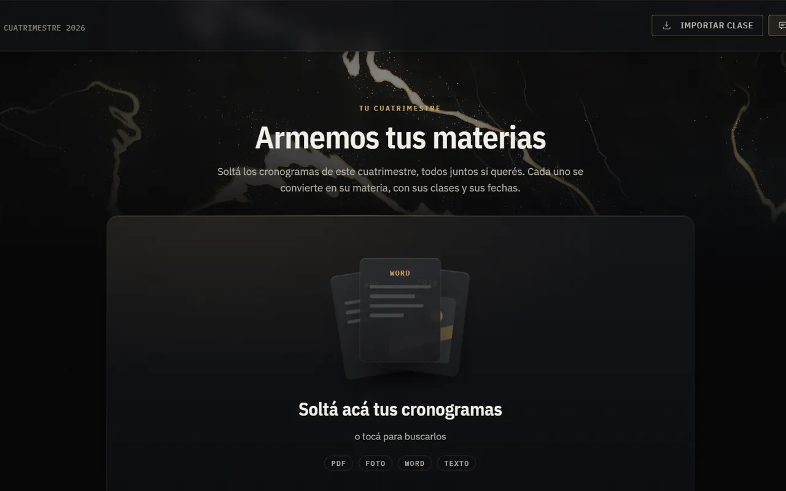
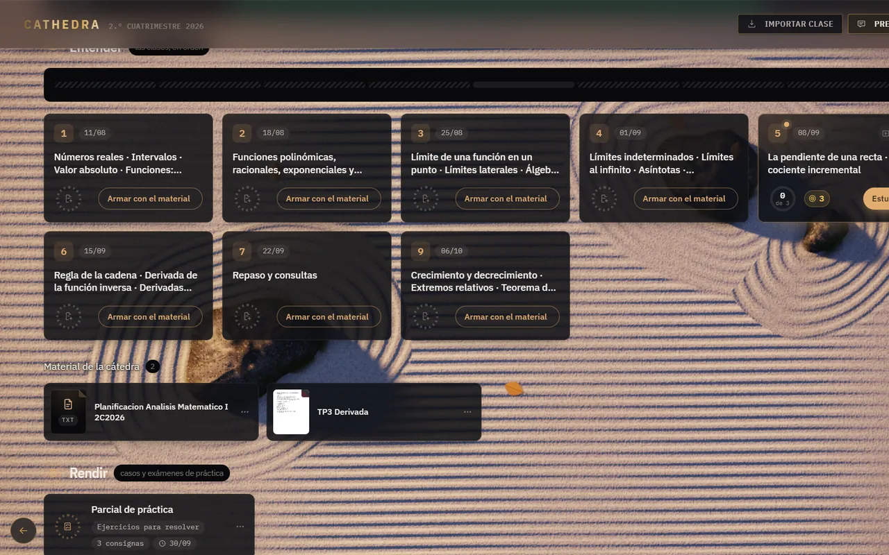
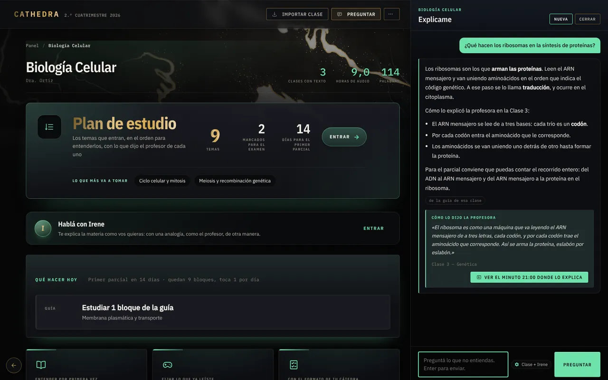
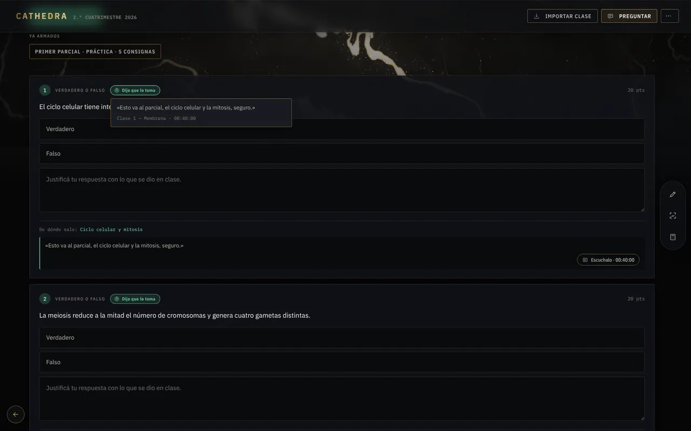

01
Subís la clase.
Soltá el audio o el video de la clase, o el material que te pasaron (PDF, Word, PowerPoint). Cathedra la pasa a texto ahí mismo, en tu computadora, y la guarda en su materia.

Estudiá desde lo que dijo el profesor.
Windows 10 u 11 · 64 bits
Cómo funciona
01
Soltá el audio o el video de la clase, o el material que te pasaron (PDF, Word, PowerPoint). Cathedra la pasa a texto ahí mismo, en tu computadora, y la guarda en su materia.

02
Ordena la materia clase por clase, con su fecha y su tema, y arma la guía de estudio desde lo que se dijo en el aula y desde el material de la cátedra.

03
Le preguntás como a un compañero que tomó todos los apuntes. Te contesta con lo que dijo el profesor y te muestra de qué clase sale y en qué minuto, para que lo vuelvas a escuchar.

04
Arma el parcial desde lo que el profesor dijo que toma y con el formato que anunció. Te corrige, te muestra de dónde sale cada consigna y te deja el repaso de lo que te costó.

Lo que la hace distinta
Estudiá lo que va a tomar tu profesor, no un apunte cualquiera.
Cada resumen, cada pregunta y cada consigna sale de tus clases y del material de tu cátedra. No de un apunte genérico.
Lo que te dice viene con su fuente: la clase y el minuto en que se dijo. Si dudás, lo escuchás.
Tus clases, tus guías y la transcripción andan sin internet. Lo que necesita conexión, te lo avisa.
Las grabaciones, las transcripciones y tus resultados quedan guardados en tu computadora. No se venden ni se usan para publicidad.
Para Windows
Como todavía no está firmada, Windows muestra un aviso azul: tocá «Más información» y después «Ejecutar de todas formas».
Si te invitaron, pegá tu código en Ajustes → Cuenta.